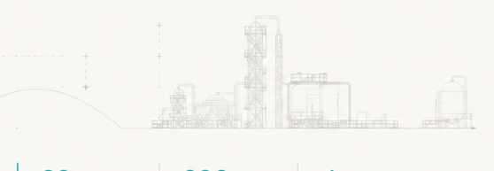

Technical depth
Analysis grounded in codes, standards, and operating context.
ESTN helps industrial organisations protect complex assets, reduce operational risk, and make confident lifecycle decisions.
We combine field experience, engineering judgement, and risk-led methodologies to protect assets where failure is not an option.
Talk to our engineersESTN supports oil and gas, refining, power, mining, metals, and energy infrastructure with practical asset integrity solutions. Our work helps teams improve reliability, meet compliance obligations, and prevent avoidable shutdowns.
Analysis grounded in codes, standards, and operating context.
Clear priorities your engineering and maintenance teams can use.
Recommendations shaped around people, assets, and continuity.
Transforming complex engineering data into confident, risk-informed decisions.
Global experience advising operators on complex plant, equipment, and structural integrity challenges.
End-to-end engineering from defect assessment and risk planning through run-repair-replace validation.
Every sector has its own failure mechanisms, regulatory pressures, and operating priorities. Our solutions reflect that reality.

Upstream, midstream, pipelines, terminals, and offshore assets.
Pressure equipment, piping circuits, tanks, and process units.
Generation equipment, utilities, and reliability-critical systems.
Heavy equipment, structures, processing, and material handling.
Integrated inspection, assessment, and reliability services designed around the condition and criticality of your assets.
Data-driven integrity assessment for onshore and offshore pipeline systems, covering corrosion, defects, inspection planning, and intervention priorities.
Structured RBI programmes that connect probability, consequence, degradation mechanisms, and inspection effectiveness.
Engineering assessments for equipment affected by thinning, cracking, dents, distortion, and other service-related damage.
Lifecycle integrity systems that align inspection, maintenance, risk, compliance, and performance information.
Condition and reliability support for turbines, compressors, pumps, and other dynamic equipment.
We keep engagements focused, transparent, and aligned to the decisions your team needs to make.
Discuss your challengeDefine the asset, operating context, evidence, and business decision.
Apply fit-for-purpose engineering methods, standards, and specialist judgement.
Translate findings into ranked risks, interventions, and investment choices.
Help your team implement recommendations and sustain integrity performance.
Representative project scopes showing how ESTN supports safer, more reliable industrial operations.
Condition and remaining life evaluation across pressure equipment, reactors, and critical piping systems.
Inspection and maintenance strategy development for continuous, compliant generation.
Fatigue, abrasion, and structural condition analysis supporting maintenance decisions.
Tell us what you are facing. An ESTN engineering specialist will respond with the right next step.